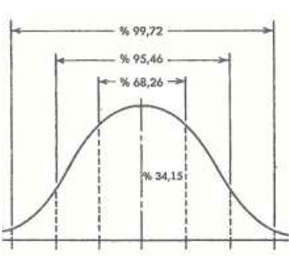

N
narkoanaaliz (narcoanalysis) Bugün pek kullanılmayan, bir ölçüde kısa süreli bir psikanalitik tedavi biçimi. Bu tedavide doktorla işbirliği yapması, duygularının araştırılması ve dışavurumunun sağlanması, önemli çocukluk yaşantılarının su yüzüne çıkarılması ve hastalık belirtilerinin altında yatan bilinçdışı güçler konusunda daha iyi içgözlem yapması için hastraya sürekli olarak narkotik bir ilaç veriliyor.
narkotik (narcotic) 1. Genellikle opioid alkaloidlerden türetilen bir ilaç grubu. Bu ilaçlar küçük dozlarda sedatif ve ağrı kesici özellikler taşıyor. Ancak, alkol gibi apioid olmayan maddeler de merkez sinir sistemi üzerinde etki yaratabiliyor. 2. Yasayla yasaklanmış olan esrar, eroin LSD gibi uyuşturucu maddeler. Bu iki madde grubunun farmakolojik yapıları farklı olduğundan, bu terim bugün çok kullanılmıyor.
natüralizm ve eğitim (naturalism and education) Natüralizmi savunan J. J. Rousseau’nun bu düşünceleri doğrultusundaki eğitim anlayışı ve bu anlayışın dayandığı temel önermeler; doğal eğitim. Natüralist Program: Gerçek, doğadır ve doğal bir varlık olan insan, doğuştan iyidir; çünkü yaradanın elinden her şey iyi çıkıyor; bunlar, insanın elinde bozuluyor. Toplum, insanın istenmeyen davranışlar göstermesine neden oluyor. İnsan, güçsüz doğduğu için güce; her şeyden yoksun doğduğu için yardıma; aptal doğduğu için akla gereksinim duyuyor. Büyüyünce gereksinim duyacaklarını ona eğitim veriyor. Bu eğitimi insan ya doğadan ya insanlardan ya da eşyadan alıyor. Yeteneklerinin ve organlarının iç gelişimini doğanın eğitimi sağlıyor. Bu gelişimi nasıl kullanacağını insanlar öğretiyor. Etkilendiği nesnelerden kendi kendine edindiği deneyim de eşyanın eğitimi olarak niteleniyor. Bu üç tür eğitim aynı hedefleri gerçekleştirdiğinde çocuk iyi yetişmiş oluyor. Natüralit Eğitim için Ortam Hazırlanırken Uyulan İlkeler: Bu amaçla şu ilkelere uygun bir eğitim ortamı düzenlenmelidir: (1) Öğrenci odaklı ve demokratik bir program hazırlanıyor. Öğrenci, doğal ortamda karşılaştığı sorunları çözmeyi yaparak, yaşayarak öğreniyor, duygularını geliştiriyor ve yaşamına düzen veriyor. İyi bir kılavuz olan doğa, kimseye ayrıcalık tanımıyor; doğada insanın yaşaması için her işini kendisinin yapması bekleniyor; başarırsa ödülünü alıyor; başaramazsa cezalandırılıyor. (2) Kişi, öğreneceklerini doğal ortamda ilgisine ve yeteneğine göre seçiyor. Bu nedenle öğrenme, kişinin ilgi ve yeteneklerine göre gerçekleştirilmelidir. Öğretmen, bilgi aktaran ve onları ezberleten değil; doğal ortamda bilgi için fırsat ve olanaklar yaratan kişi olmalıdır. (3) Öğrenciye hazır bilgiler sunulmuyor; öğrenci bunları keşfederek öğreniyor. Bizim gerçek öğretmenlerimiz deneyim ve merak duygusu olduğu için öğrenci, keşif için yüreklendiriliyor. Düşünüp sonuca varmayı öğrenemeyen, sonra başkalarının kölesi oluyor. (4) İnsana uygun bir bir eğitim gerçekleştiriliyor. Çocuğa gerçekler, olduğu gibi anlatılıyor. Gerçeklerin üstü örtülmüyor. Öğrenciye yaşamda yararlı olacak bilgi ve beceriler öğretiliyor. Öğrenci, bilgin olmadan önce, insan oluyor. (5) Kafasının almadığı, anlayamadığı toplumsal olaylardan öğrenci uzak tutuluyor; çünkü, anlaşılmayan şey öğrenilemiyor. Görevimiz, öğrenciye bir şey öğretmek değil, ona aydınlık, doğru düşünceler edindirmektir. Çocuğa büyüyünceye dek hiçbir dinsel inanç ve ahlaksal değer yargısı verilmiyor. Çocuk, inanç ve değer yargılarını kendi mantığıyla oluşturuyor. Bkz. eğitim akımları.
neden (cause) Belli bir değişimden, sonuçtan önceki koşul; sebep. Bilim bakımından neden, bir önceki ile sonraki arasında var olan normal ilişki gerçeğinden çıkarılan bir tümevarımdır. Nedensel ilişki, felsefenin tartışma konularından biridir. Bkz. nedenbilim; neden bulma; neden-sonuç ilişkisinin üç koşulu.
nedenbilim Bkz. etyoloji.
neden bulma (rationalization) Kişinin bastırdığı içgüdüsel istekleri bilinçdışında tutan güçlerin zayıflaması sonucu, gerçeklere uymayan davranış gösterdiğinde, bu davranışı haklı çıkarmak için akla uygun nedenler bulması; rasyonalizasyon; bahane bulma, mantığa büründürme, neden uydurma; ussallaştırma. Bu savunma mekanizması, yalıtımla ilişkili gelişiyor. Kişi, gerçeklere uymayan bir davranış gösterdiğinde, bu davranışı haklı çıkaran bir neden bulmak gereğini duyuyor. Gerçeğe aykırı olan davranışı, bulduğu nedenle gerçeğe uygunmuş gibi göstermeye çalışıyor. Gerçekte akla ve mantığa uymayan davranışını, akla ve mantığa uygunmuş gibi sunuyor. Bu gerçekdışı davranışını, bir an için kişiliğinin bir parçası olarak benimsiyor; ilkelbenliğinin eylemini değiştirerek içselleştiriyor. Kişinin bulduğu neden, akla ne kadar uygun olursa, duyduğu kaygı, o kadar azalıyor. Kırmızı ışıkta geçtiği saptanan sürücü, kuralı çiğnemediğine ilişkin çok tutarlı nedenler bularak onları, büyük bir inançla sayıp döküyor. Örneğin, “Ben ışığa geldiğimde yeşil yanıyordu. Kırmızı, geçerken yandı.” Ya da “Herkes geçiyordu; arkamda da araba vardı; geçmek zorunda kaldım.” diyor. Çalışmadığı için kırık not alan öğrencilerin çoğu, çok çalışmıştır; sınavdan önceki gece uyuyamamıştır ya da canı sıkkın olduğu, heyecanlandığı, o gece annesi hastalandığı için iyi bir sınav kâğıdı yazamamıştır. Kimisi de öğretmenlerinden kaynaklanan nedenlerle zayıf almıştır. Bunlar arasında kimileri, bile bile; kimileri ise bilinçdışı bir mekanizma ile neden uyduruyorlar. Bilinçdışı savunma kullananların buldukları neden, kendi benliklerine, kişiliklerine uygun bir nedendir. Örneğin, evlenmemiş bir kız, herkes peşinden koştuğu halde kimseye yüz vermemiş, kendini anlayacak birinin çıkmasını beklemiştir. Erkeklerin tümü kabadır; para, ün, çıkar peşindedir. Evlenmemesinin nedeni bunlardan biri ya da birkaçıdır. Kişi geç kalmıştır; ama, nedeni trafiktir. Bir başkası, arkadaşlık edecek kimse olmadığı için yalnızdır; öbürü dünyada işsizlik olması nedeniyle işsizdir. Kişinin evi, yaramaz mı yaramaz çocuğu yüzünden böyle dağınıktır. Anlaşıldığı gibi neden bulma, güçlü bir benlikten yoksun kişilerce sıklıkla kullanılan ilkel bir savunma kanizmasıdır.
nedensel davranışlar Bkz. davranış çeşitleri.
nedensellik (causality) Önce oluşan görgül bir olayın, başka görgül bir olayın oluşumunu belirlemesi. Neden-sonuç ilişkisinin üç ölçütü bulunuyor. Bunlardan biri, birlikte değişimdir. Bunun için, iki değişken arasında yüksek bir ilişki olmalı; X değişince Y de aynı zamanda değişmelidir. İkincisi, önce nedende değişim; sonra, sonuçta değişim olmalı; Y, X’i izlemeli. Üçüncüsü de ilişkiyi açıklayabilen başka değişkenler olmamalı; başka değişkenler, denetim altına alınmış olmalı, sanal olmamalıdır. Deneysel çalışmalarda neden-sonuç ilişkisinin üç koşulu olan karşılaştırma, manipülasyon ve kontrol yer almalıdır. Deney ve kontrol (denetim) gruplarının ilk ölçümleri ile son ölçümleri, karşılaştırma; bağımsız değişkenin manipüle edilmesi de neden-sonuç ilişkisini kontrol olanağı veriyor. Neden-sonuç ilişkisinin yüksek olması, iki değişken dışındaki değişkenlerin denetiminin iyi yapılmasına bağlıdır. Neden-sonuç ilişkisini belirlemeyi amaçlayan deneysel çalışmalarda etkisinin ne olduğu incelenen değişkene bağımsız değişken; üzerinde bağımsız değişkenin etkisinin araştırıldığı değişkene de bağımlı değişken deniyor. Bağımsız değişken (X) neden; bağımlı değişken (Y) de sonuçtur. Bu niteliği ile deneysel çalışmalar, bilimin dört amacını da gerçekleştirmiş oluyor. Korelasyonel çalışmalarda X ile Y arasındaki ilişkinin yalnızca yönü ve miktarı bulunabiliyor; neden-sonuç ilişkisi kurulamıyor. Dolayısıyla, açıklama ve kontrol amacı da gerçekleştirilemiyor. Bkz. bilimin amaçları
nedensellik öncesi düşünme (precausal thinking) Piaget terminolojisinde, sekiz yaşıın altındaki çocukların yağmur, bulut, rüzgâr gibi doğa olaylarını mekanik olmaktan çok, istendik, istençsel (antropomorfik) olaylar olarak algılama eğilimleri.
nedensellik yükleme Bkz. yüklem kuramı.
neden-sonuç ilişkisinin üç ölçütü. Bkz. nedensellik.
nefret (hate) 1. Bir kişiye, bir şeye karşı duyulan çok olumsuz duygu. 2. Tiksinme, tiksinti, iğrenme.
negatif halüsinasyon Bkz. olumsuz sanrı.
negatif transfer Bkz. olumsuz geçiş.
negentrop (negentropy) Düzen, yapı, kestirilebilirlik. Rastlantı, kaos anlamındaki entropinin anlamının karşıtı. Sistem kuramında sistemler, düzen sorununu çevreden sistem aktarma yoluyla çözüyorlar. Kimi toplumlar düzen yaratmak için özellikle ekonomik ve yasal güç kullanıyorlar. Kimileri ise düzen sorununun çözümünde ortak etkileşimi ve toplumsallaşmayı yeğliyorlar. Bkz. sistem kuramı.
negentropi (negentropy) Düzen, yapı, kestirilebilirlik. Rastlantı, kaos anlamına gelen entropinin karşıtı. Sistemler, düzen sorununu, sistemler kuramında, çevreden sistem aktararak çözüyor.Toplumbilimde kimi toplumlar, düzen yaratmak için zor; özellikle ekonomik ve yasal zor kullanıyor. Kimileri ise düzen sorununu çözmede ortak etkileşimi ve toplumsallaşmayı kullanıyor.
nekrofili (necrophilia) Kişinin cesetle cinsel ilişki kurarak ya da cesedi izleyerek cinsel doyum aldığı, çok az görülen bir sapma. Tama yakını erkek ve çoğu psikotik olan ve normal cinsel ilişkiye ilgi duymayan bu kişiler, kimi zaman kurbanı önce öldürüp sonra onunla ilişkiye giriyorlar; ancak çoğunlukla morglardan ya da mezarlıklardan ceset çalıyorlar.
nemfomani (nymphomania) Kadında cinsel isteğin hastalık derecesinde aşırı ve sürekli olması durumu. Nemfomaniye özellikle manik kadınlarda rastlanıyor.
neopsikanaliz Bkz. yeni psikanaliz.
nesne (object) 1. Bağımsız bir varlığı olan; duyu organlarıyla algılanabilen ya da zihinsel olarak incelenebilen şey. 2. Freud’a göre, bir içgüdünün doyum amacına ulaşmasını sağlayan kişi, şey ya da vücudun bir bölümü. Bkz. nesne değişmezliği; nesne dili; nesne ilişkileri; nesne ilişkileri kuramı; nesne kalıcılığı; nesne kavramı; nesne sevgisi; nesne yükü.
nesne algısı Bkz. algı.
nesne değişmezliği (object constancy) Gözlem koşullarının değişmesine karşın, nesneyi değişmez olarak algılama eğilimi. Örneğin, bizden uzaklaşan nesnenin retina üzerindeki imgesinin küçülmesine karşın, o nesneyi yine aynı büyüklükte ve aynı biçimde algılıyoruz. Bkz. nesne; renk değişmezliği.
nesne dili (object language) Sözsüz iletişimde sözsüz bir kodlama biçimi olan dil. Nesne dili, niyet taşıyan ya da niyet taşımayan sanat yapıtları, aletler, bedeni örten giysiler gibi tüm malzemeleri kapsıyor . Örneğin, harflerin kitaplarda italik ya da dik yazılışı gibi yönleri ile işaretlerdeki kullanımın da bir maddeleşme niteliği bulunuyor; bu da onları nesne dili kapsamına sokuyor. Bkz. nesne.
nesne ilişkileri (object relations) 1. Psikanalize göre, doyum kaynağı olarak libidinal ya da saldırganca iş gören kişilerin etkinlikler ya da nesneler ile olan ilişkisi. Bu doyum, ya doğrudan ya da söz konusu ruhsal enerjiyi yüceltme yoluyla sağlanıyor. 2. Klasik psikanalize göre, başka bir kişiye yönelik duygusal bağ. Yeni Freudcular, örneğin M. Klein, bu terimin anlamını anne, bakıcı gibi önemli başkalarıyla anlamlı bireyler arası ilişkiler kurabilme yetisini de içerecek biçimde genişletmiştir. Bkz. birincil nesne; nesne; KLEİN, Melanie; nesne ilişkileri kuramı.
nesne ilişkileri kuramı object relations theory) Psikanalizin tanımladığı benlik psikolojisinde, bebeğin, benlik gelişimini ve sonraki bireyler arası ilişkilerini, annesine ve çevresindeki öbür kişilere yönelik ilk duygusal bağları temelinde biçimlendirdiğini savunan kuram. Bkz. nesne; nesne ilişkileri.
nesne kalıcılığı (object permanence) Piaget’nin bilişsel gelişim kuramına göre, bir yaş dolayındaki çocuğun, bir nesnenin, onu artık görmese bile, varlığını koruduğunu anlaması. Bu gelişim, bebeğin nesnelerin zihinsel imgelerini oluşturmasını gerektiren bir yetidir. Bkz. nesne.
nesne kavramı (object concept) Piaget’in bilişsel gelişim kuramına göre, çocuğun kendi dışındaki bir nesnenin kendisiyle aynı gerçek ortamda bulunduğunu ve hareket ettiğini algılama yetisi. Bkz. nesne; nesne kalıcılığı
nesnel (objective) 1. Duyu organlarıyla algılanabilen; fiziksel bir varlığı bulunan; öznel olmayan. 2. Çarpıtmalardan öznel (kişisel ya da duygusal) önyargılardan uzak, yansız olan. Bkz. nesnellik.
nesnelerin değişmez görünme eğilimi Bkz. algı; nesne değişmezliği.
nesnel kaygı (objective anxiety) Açık seçik bir nedeni bulunan; dışsal bir olay ya da nesneden kaynaklanan kaygı. Bu, kaygının standart tanımıyla çelişen bir tanımdır. Bkz. kaygı.
nesnellik (objectivity) 1. Yansızlık; bir olayı, durumu, veriyi önyargısız yorumlama; kişisel duygu, düşünce ve isteklere göre değerlendirme yerine, dış gerçekliğe dayandırılarak değerlendirme. Bilimde belirleyici bir önem verilse de postmodern görüngübilimciler gibi kimi yetkeler (otoriteler), yorumcunun öznel etkinliğinden bağımsız bir doğal ya da toplumsal gerçekliğin bulunmadığını savunuyorlar. 2. Bir bulgunun, yorumun başkalarınca da test edilebilmesi, belirlenebilmesi. Bkz. öznellik.
nesnel psikoloji (object psychology) Psikolojinin konusunun yalnızca yeterli gözlemcilerin gözlemleyebilecekleri olaylar ve görüntülerle sınırlandırılması gerektiğini savunan psikoloji akımı; objektif psikoloji; nesnel ruhbilim. Bu terim, davranışçılık akımı ortaya atılmadan önce, özellikle Rusya’da kullanıldı. Nesnel psikoloji, dar anlamıyla hem davranışı hem de fizyolojik olayları konu edindi. Karşıtı, öznel psikolojidir. Bugün psikoloji, tümüyle nesneldir; olguları, tepkileri ya da eylemleri inceliyor. Ancak, nesnel psikoloji, içebakışı ve buna ilişkin yorumları benimsemiyor.
nesnel ruhbilim Bkz. nesnel psikoloji.
nesnel test (objective test) Çok sayıda kişiye uygulanarak güvenirliği ve geçerliği belirlenmiş ya da çoktan seçmeli bir dizi sorudan oluşmuş; yanıt anahtarı önceden belli olan ve bu nedenle puanlamada uzman yargısı (öznellik) gerektirmeyen; bunun sonucu olarak da puanlayan kişinin izlenimlerinden, inançlarından etkilenmeyen test. Bkz. geçerlik; güvenirlik.
nesnel yönelim (objective orientation) Piaget’nin gelişim kuramında, 10 yaşın altındaki çocuklarda tipik olarak gözlemlenen bir ahlaksal yargı biçimi. Bu çağ çocukları, ahlaksal değerlendirmeyi davranışın neredeyse yalnızca nesnel, fiziksel sonuçlarına bakarak yapıyorlar. Bkz. içkin adalet; öznel yönelim.
nesnel yöntem (objective method) Araştırma, inceleme ya da uygulamada, doğruluğu kabul edilmiş bilgilerden yararlanma yolu. Bu yolla kişisel kanılardan ya da önyargılardan uzak duruluyor. Bkz. PAVLOV, İvan Petroviç.
nesnel zekâ (concrete intelligence) Nesneye ya da nesnel durumlara uyabilme gücü ile ilişkili yetenek.
nesnenin bilincine varma Bkz. KÜLPE, Oswald.
nesne sevgisi (object libido) Psikanalizde, libidonun benliğin dışındaki nesnelere (kişi, düşünce, hedef ya da etkinliklere) bağlanması. Bkz. birincil nesne.
nesne yükü (object cathexis) Psikanalizde libidonun kişinin kendi dışındaki nesnelere (kişi, düşünce, hedef ya da etkinliklere) yüklenmesi. Nesne yükü, bir benlik yüküdür.
neşeli kişi Bkz. ruh durumu.
nevrasteni Bkz. sinir argınlığı.
nevrotik (neurotic) Nevrozla, bu bozukluğu olan kişiyle ya da nevrotik kişinin davranışları ve benzerleriyle ilgili. nevrotik bozukluk; nevrotik çatışma; nevrotik çekilme; nevrotik çocuk; nevrotik çözüm; nevrotik gereksinimler; nevrotik gurur; nevrotik hak iddiası; nevrotik kaygı; nevrotik kişilik; nevrotik kurgu; nevrotiklik; nevrotik savunma; nevrotik suçluluk duygusu; nevroz.
nevrotik bağımsızlık gereksinimi Bkz. nevrotik gereksinimler.
nevrotik bozukluk (neurotic disorder) Kişinin kendine yabancı ve kabul edilemez gördüğü bir kaygı belirtisi ya da belirtiler grubu biçimindeki ruhsal bozukluk. Bu bozuklukta gerçeklik testi bir ölçüde çarpıtılıyor, davranışlar oldukça engelleniyor. Ancak, bu bozukluğu yaşayan kişi, genel toplum normlarını çiğnemiyor; genel işleyişi fazlaca bozmuyor. Tedavi edilmediğinde, bozukluk yineleniyor. Nevroz, kaynağında organsal bir neden bulunmayan bozukluktur. Nevrotik bozuklukların kimisi zamanla ağır nevrotik bozukluk özelliği kazanabiliyor. Bkz. nevroz.
nevrotik çatışma (neurotic conflict) 1. Sürekli uyumsuzluklara ve duygusal bozukluklara yol açan ruhsal (içsel) çatışmalar. Klasik psikanalize göre bu çatışma iki yapı arasında; örneğin libidinal ve saldırgan içgüdüler; benlikle ilkelbenlik; benlikle üstbenlik arasında ortaya çıkabiliyor. 2. Horney’a göre, aşırı bir güç ve bağımsızlık gereksinimi ile sevgi ve bağımlılık gereksinimi arasındaki gibi, nevrotik gereksinimlerin birbiriyle çatışması. Bkz. bütüncü yaklaşım; nevroz.
nevrotik çekilme (neurotic resignation) Horney’a göre, iç çatışmaların üç ana çözümünden biri. Bu çözüm, çatışmaların ayırt edilmesine neden olacak insanlardan, ortamlardan uzaklaşmayla ve heyecansal yalıtımla tanımlanıyor. Bkz. bütüncü yaklaşım; çekinik tip; nevrotik çözüm; nevroz.
nevrotik çocuk (neurotic child) Yetişkindekine benzer biçimde sınırlanıp belirlenebilir türden bir nevroz belirtisi olmamakla birlikte, yetişkin nevroz ve psikozlarının gereçlerini oluşturan belirtiler gösteren çocuk. Doyum arayan ilkenbenlik isteklerinin (içgüdülerin) bilinç alanına çıkmalarını ve doyum bulmalarını küçük çocukta aile; daha sonraki yaşlarda da bireyin kendi üstbenliği engelleyip yasaklıyor. Bu durumda benlik rahatsız olduğu, yoğun bir acı duyduğu için, o isteklerin bastırılmasına yardımcı oluyor. Oldukları gibi boşalım ve doyum sağlayamayan içgüdüler (dürtüler), bu kez, yasak olmayan başka belirtilerle bilince yansıyor ve orada yer alıyor. Nevrozları, işte bu belirtilerin bir bölümü oluşturuyor. Nevrozlar, 5 yaşından küçüklerde de görülmekle birlikte, genellikle gizil dönemde (6-7 ile 11 yaşlar arasında) ve sonraki dönemlerde rastlanan bozukluklardır. Nevrozların belli başlıları; fobi nevrozu, histeri nevrozu, kaygı nevrozu, obsesif-kompulsif nevroz ve depresyon diye adlandırılıyor.
nevrotik çözüm (neurotic solution) Horney’a göre, bir iç çatışmayı yüksüzleştirmeye, dindirmeye, bundan kaçınmaya ya da bunu bilinçten çıkarmaya ve bu yolla gerilimleri azaltıp bir ölçüde ruhsal bir bütünlük yaratmaya yönelik girişimlerden oluşan bilinçsiz, dinamik ruhsal eylemler. Nevrotik kişi, temel çatışmayı ortadan kaldırmak için Horney’ın önerdiği insanlara yönelme, insanlara karşı olma ve insanlardan uzaklaşma biçimindeki üç çözüm yolundan birine bilinçdışında yapışıp kaldığı için başarı gösteremiyor. Kişi, bu üç gereksinimi de birleştirici bir tutumla doyuma kavuşturduğunda sağlıklı bir çözüm sağlıyor. Ancak, bunu başarabilmek için temel kaygının yoğunluğunu da ortadan kaldırması gerekiyor. Bkz. nevrotik çekilme; nevrotik gereksinimler; nevroz.
nevrotik gereksinimler (neurotic needs) Horney’a göre, İçsel çatışmaların kaynağını oluşturan ve hiçbir zaman doyurulamayan üç ana gereksinim. Bu gereksinimlerin doyurulamama nedeni, nevrotik kişinin, bilinçdışında hep daha fazlasını istemesidir. Horney, daha önce on nevrotik gereksinim belirlemişken, sonra bunları üçe indirdi. Temel kaygıdan kurtulmak için usdışı çözümler arayan ve doymak bilmeyen bu üç gereksinim şunlardır: (1) Nevrotik sevgi gereksinimindeki gibi insanlara yönelme (başkalarına bağımlılık); (2) Nevrotik bağımsızlık gereksinimindeki gibi insanlardan uzaklaşma (bağımsızlık, özyeterlik, etkilenmezlik); (3) Nevrotik güç kazanma gereksinimindeki gibi insanlara karşı olma (güç, saygınlık, mal mülk kazanma). Sağlıklı kişi, bu üç gereksinimi de bilinçli olarak dengeli bir biçimde gideriyor; nevrotik kişi, bilinçdışının etkisiyle bunlardan birine saplanıyor ve ne bunu ne de öbür ikisini doyurabiliyor. Bkz. bütüncü kuram; nevroz.
nevrotik gurur (neurotic pride) Horney’a göre, bireyin kişisel özelliklerine bağlı olarak kendisinde var olan abartılı ve us dışı gurur. Bkz. nevroz.
nevrotik güç kazanma gereksinimi Bkz. nevrotik gereksinimler.
nevrotik hak iddiası (neurotic claim) Horney’a göre, kişinin; başkalarının ya da tanrının, doğanın, kurumların istek ve gereksinimlerine boyun eğmesi, bunlara uygun davranması gerektiği ve buna hakkı olduğu inancı. Nevrotik hak savunucusunun, belli bir oranda bilinçli olduğu durumlarda, ussallaştırma yoluyla haklı çıkarıldığı da oluyor. Nevrotik hak iddialarının boşa çıkarılması, kişide öfke, kinlenme ve haksızlığa uğramış olma duygusu yaratıyor. Bkz. nevroz.
nevrotik kaygı (neurotic anxiety) 1. Yüzer gezer kaygı. 2. Psikanalize göre, biliçdışı çatışmalardan, ilkelbenlik dürtülerinden kaynaklandığı; duygularla davranışları olumsuz yönde etkilediği ve tedaviye direnci artırdığı için uyumsuz olarak değerlendirilen kaygı. 3. Varoluşçu psikolojiye göre, normal varoluşsal kaygıdan kaçınma sonucu yaşanan kaygı. Bkz. içgüdü kuramı (Kaygı); nevroz; varoluşçu psikoloji (Varoluşsal Kaygı).
nevrotik kişilik (neurotic character) 1. Nevroza yatkın kişilik özellikleri olan ya da nevrotik tanısı konan bireyin kişiliği. 2. Psikanalize göre, uyumsuz olarak nitelendirilen kaygıyı yaşayan bireyin kişiliği. 3. Adler’e göre, kişinin eksiklik duygularına bir karşı savunma olarak kullandığı; dolayısıyla onu nevroza yatkın kılan eğilimler ve özelliklerden oluşan kişilik. 4. Hümanist psikolojiye göre, korunma, sevilme, ait olma, saygınlık gibi kendini gerçekleştirmeye göre öncelik taşıyan gereksinimlerini zamanında ve yeterince doyuramamış olan kişi. Sürekli olarak, bu gereksinimlerini gidermek için uğraşan nevrotik kişilikli birey, çevresindeki kişi ve nesneleri, gereksinimlerini giderme aracı olarak algılıyor. Çocukluktaki bir engellenmenin yol açtığı bir nevrozu ya da psikozu ortadan kaldırmak için o zaman çocuğa verilmemiş olan olanağı çok zaman sonra ona sunmak, bilinçdışına bastırılan istekler için fazlaca bir işe yaramıyor. Çünkü ne gün, o gün ne de saat, o saattir. Kişinin çok sonra elde ettiği olanak, yalnızca geçici bir süre rahatlama sağlıyor. Geçmişte boşalmak (doymak) isteyen ve buna olanak verilmeyerek boğulan (bastırılan) isteğin yarattığı bozukluk (nevroz) sürüp gidiyor. Bu istek, o uzak zamanlardaki yaşın, çağın isteği olduğu ve bastırıldığı için unutulup gidiyor. Şimdi yaşanan rahatsızlık, unutulan o olayın kalıntısı olan acılar ve tanınmaz duruma sokulan görüntüleridir. Bkz. bağımlı kişilik; bağımsız kişilik; bütüncü kuram (Nevrotik Gereksinimler); nevroz.
nevrotik kurgu (neurotic fiction) A. Adler’in, gerçekçi olmayan, ulaşılması olanaksız hedefleri içeren bir kılavuz kurgu türüne verdiği ad.
nevrotiklik (neuroticism) Temelsiz kaygı, gerilim ve duygusal dengesizlik gösteren kişilik özelliği. Bkz. EYSENCK, Hans Jürgen.
nevrotik savunma (neurotic defence) 1. Psikanalize göre, savunma mekanizmaları normal ve nevrotik olarak ikiye ayrılıyor. Bütün savunma mekanizmaları, bir tür koruyucu işlev görüyor. Ancak, katı bir biçimde uygulanan ya da gerekli ve uygun olmayan durumlarda da kendiliğinden varlık göstermeleri, hastalıklı sonuçlar doğuruyor. Bu nedenle nevrotik savunmalar, başarısız savunmalardır. Başarılı savunma mekanizmaları dışındaki tüm savunmalar, er ya da geç, kişinin yaşamında aksaklıklara yol açıyor. Bkz. benliğin savunma mekanizmaları. 2. Horney’a göre, çocukla onun çevresi arasındaki çatışmalar ve bozuk ilişkilerden kaynaklanan temel kaygıya karşı benimsenen savunma stratejileri. Bkz. nevrotik gereksinimler.
nevrotik sevgi Bkz. nevrotik gereksinimler.
nevrotik suçluluk duygusu (neurotic guilt) Kaygıya, özseverliğin yitirilmesine ve çatışmalara yol açan gerçek ya da düşsel bir kural çiğnemekten kaynaklanan suçluluk duygusu; hastalıklı suçluluk duygusu. Psikanalize göre bu duygu, benlik ile üstbenlik arasındaki çatışmadan kaynaklanıyor ve bilinçli ya da bilinçsiz bir cezalandırılma korkusuyla ilişkili bir kaygı biçiminde ortaya çıkıyor. Bkz. insanın sekiz çağı ((3) Suçluluk Duygusuna Karşı Girişim Duygusunun Gelişimi) nevroz; suçluluk duygusu.
nevrotik tepki Bkz. nevrotik savunma.
nevroz (neurosis) Freud’a göre, bedensel ya da sinirsel kökenli olmayan; gerçeklikle ilişkisi bir ölçüde çarpıtılmış olsa da henüz tümüyle yitirilmemiş olan ruhsal kökenli bozukluklar; psikonevroz; sinirce. Kaygı, takınaklı düşünceler, kompulsif davranışlar, fobiler, bedensel tepkiler, çözülmeli durumlar, depresif tepkiler, isterik dönüşümler, nevrozlar arasında yer alan bozukluklardandır. Nevrozlularda, psikozlulardaki içgözlem yeteneği ya da gerçeklikle ilişki kurma gücü tümüyle yitirilmediği için kişi, aile ve iş yaşamına, toplumsal çevreye belli bir ölçüde uyum sağlıyor ve onu sürdürüyor. Kişinin rahatsızlığı, dışardan bakıldığında ilk anda görülmüyor. Bozukluk, daha çok, kişinin kendisiyle ilişkilidir; yani özneldir. Bkz. bireysel psikoloji; deneysel nevroz; depresyon; fobi nevrozu; histeri nevrozu; nevrotik; obsesif-kompulsif nevroz.
nevrozlu kişilik Bkz. nevrotik kişilik.
nicel değişken Bkz. değişken.
nicelik (quantity) Sayılabilen, toplamı doğrudan sayı olarak belirtilebilen genel özellik; kemiyet. Bkz. nitelik.
nikotin (nicotine) Tütün bitkisinde bulunan, zehirli, uçucu bir alkaloid. Sinir sistemine hem küçük dozlarda uyarıcı hem de büyük dozlarda bastırıcı bir etkide bulunan nikotin, kolaylıkla bağımlılık yaratıyor. Buna karşılık, bağımlılığı, zorlukla ortadan kaldırılabiliyor. Nikotin, insan bedenine ölümcül zararlar veriyor. Bkz. nikotinden uzaklaşım.
nikotinden uzaklaşım (nicotine withdrawal) Tütün gibi nikotin içeren maddelerin kullanımının birdenbire bırakılmasıyla ortaya çıkan bir sendrom. Kaygı, yoğun bir nikotin alma isteği, engellenmiş olma duygusu, sinirlilik, iştah açılması, kilo alma belirtileri gösteren bu sendrom, maddenin bırakılmasını izleyen bir iki saat içinde başlayıp haftalarca, hatta aylarca sürebiliyor.
niktofobi Bkz. karanlık korkusu.
nimfcil tutku (nymphonania) Kadınlarda görülen aşırı cinsel istek; nimfomani.
nimfomani Bkz. nimfcil tutku.
nirvana (nirvana) Sanskritçede “söndürmek, sönmek” anlanımı taşıyan bir Budist öğretisi terimi. Nirvana, insanı, birçok dinde de olduğu gibi dünya isteklerinden kurtulmaya, kendi yazgısını kabullenmeye ve ölümden sonra daha iyi, mutlu bir yaşamı umut etmeye ve bu yolla kaygıdan kurtulmaya çağırıyor. Mayahana Budizminde bir mutluluk durumuna karşılık gelen nirvana, Hinayaana Budizminde yokoluşa karşılık geliyor. Bkz. nirvana ilkesi.
nirvana ilkesi (nirvana principle) Psikanalize göre, tüm içgüdülerin ve yaşam süreçlerinin, cansız (inorgansal) maddelerin istikrara ve denge durumuna ulaşma eğilimi. Freud’a göre ölüm içgüdüsünün hedefi, bu istikrar ve denge durumunu yaratmaktır. Bkz. nirvana.
nişanlılık Bkz. evlilik (Eş Seçme ve Eş Olmanın Koşulları: Tanımak, Sevmek, Paylaşmak).
nitel değişken Bkz. değişken.
nitelik (quality) Bireyi, nesneyi, yaşantıyı ya da onların bir yönünü, ötekilerden ayıran, şöyle ya da böyle yapan; keyfiyet. Bkz. nicelik.
nitelik karmaşası (quality complex) Kimi düşlerle şizofrenili konuşmalarında görülen, türlü düşünce ya da düşünce parçalarını mantıklı hiçbir ilişki kurmadan bir araya getiren hastalıklı bir düşünce düzeni.
nitelikli öğretmen (qualified teacher) Belli okul basamaklarında öğretmenlik yapabilmek için yasalarla saptanan öğrenimi başarı ile tamamladıktan sonra gereken staj (deneme) süresini de geçirerek öğretmenlik yapma hakkını kazanmış olan öğretmen. Nitelikli bir öğretmenin yapması zorunlu genel ve mesleksel öğrenim, çalışacağı okul basamağına ve öğretim dalına göre değişmenin ötesinde, staj süreleri de ülkelere göre farklıdır. Bkz. hümanist öğretmenlik; öğrenciyi odak alan öğretmen; öğretmenin nitelikleri.
nitritler (nitrites) Hafif hoşnutluk, kafada doluluk duygusu, zaman algısının değişimi, düz kasların gevşemesi ve cinsel duygu artışı gibi belirtilerle bir sarhoşluk yaratan bütil ve isobütil nitrit gibi maddeler. Bu maddeler ruhsal bağımlılık yaratabiliyor, bağışıklık sisteminin işleyişini bozabiliyor, solunum sistemini tahriş edebiliyor ve şiddetli baş ağrısına, sersemliğe, kusmaya yol açabiliyor. İnhalanların (tiner, benzin, uhu gibi uçucu maddelerin) sürekli koklanp ciğerlere çekilmesi de sabuklama, bunama, hallüsinasyon görme, kuruntulu psikotik bozukluk gibi bozukluklar oluşturuyor.
niyet (intent) Bir şeyi önceden isteyip düşünme; bir şeye kendi kendine karar verme; kişinin içindeki bir amaca yönelme istek ve düşüncesi; kasıt.
niyet etme (intention) 1. Bilinçli olarak bir amaç izleme. 2. Elverişli koşullar olduğu sürece belli bir eylem için bir amaç tasarlama, bir amaca yönelme. 3. Brentano’ya göre bilinçli ruhsal olayların tümünde yer alan, olay dışındaki bir şeye yönelme özelliği; niyetlenme, akla koyma, kurma.
niyetlenme Bkz. niyet etme.
niyetli davranış (intentional behavior) Piaget’ye göre, çocukta 8-12 aylar arasında ortaya çıkan hafif yönelimli davranış. Çocuk, bu dönemde istediği şeye ulaşmak için belirli stratejiler izlemeyi öğreniyor. Bebeğin niyetli davranışı, engellere ya da gecikmelere karşın, bir hedefe istekle ulaşma çabası olarak ortaya çıkıyor.
niyetlilik (intentionality) Zihnin (bilincin), kendi dışındaki gerçek dünyada olup biten olaylara ya da nesnelere yönelik olma; bir şeyin farkında olma özelliği. Buna göre her bilinçlilik anı niyetlidir; niyetli olmayan bir bilinçlilik anı yoktur. Niyetlilik, bilincinde olunan çevrenin evrensel ve temel özelliklerinden biridir. Genelde korku, kaygı ve benzerleri niyetli değilken inançlar, istekler ve amaçlar niyetlidir.
nominal ölçek (nominal scale) Verilerin sayısal ya da “evet”, “hayır”, “sarı”, “kırmızı” gibi adlandırmalı dışlayıcı gruplar halinde sınıflandırıldığı bir ölçek. Söz konusu ölçekte sıralama, büyüklük, küçüklük, sıfır noktası ve benzerleri bulunmuyor; bu biçimde elde edilen verilerle aritmetik işlemleri yapılmıyor.
noradrenal Bkz. adrenal ve noradrenal.
noradrenalin Bkz. adrenalin ve noradrenalin.
norepinefrin Bkz. noradrenalin; stres hormanları.
norm (norm) Düzgü. 1. Belli bir grubun belli koşullardaki ortalama standart edimini gösteren ve bireysel edimin değerlendirilmesinde temel olarak alınan bir ölçü. 2. Bir grubun üyelerinin, belli bir durumda en çok göstereceği (tipik) davranış. 3. İnsanların çeşitli ortamlarda yapması ve yapmaması gerekenleri belirleyen öğrenilmiş toplumsal kural; beklenen her davranış ve inanç standardı.
normal (normal) Düzgülü. 1. Belli bir grupta tipik, ortalama olan; norma uyan; toplumca kabul edilebilir olan. 2. Ruh sağlığı yerinde olan. Normallik ölçüsü, kültüre ve zamana göre değişse de evrensel kabul edilebilecek normallik ölçütlerinden de söz edilebiliyor. Bir kültürde işleyişi bozan iç çatışmaların bulunmaması; etkili düşünme, örgütlü davranma, yaşamın olağan beklenti ve sorunlarını çözebilme yeteneğinin varlığı; kaygı, bağımlılık gibi yoğun olumsuz duyguların bulunmaması, bunlardandır. Bkz. anormal.
normal dağılım (normal distribution) İstatistikte sonsuz sayıda nüfustan (popülasyondan) örneklem alınarak elde edilen bakışımlı (simetrik) çan eğrisi (normal dağılım eğrisi) biçimindeki kuramsal bir olasılık dağılımı; eşdeyişle, bir diziye ilişkin ortalamanın çevresinde bakışımlı olarak dağılan değerler ya da nitelikler. Bu nitelikteki dağılımda ortalama, ortanca ve tepedeğer aynıdır. Değerlerin büyük çoğunluğu, orta nokta çevresinde kümeleniyor. Yaklaşık yüzde 68’i ortalama değerden bir standart sapma; yüzde 95’i iki standart sapma ve yüzde 99.75’i üç standart sapma kadar uzakta bulunuyor. Ruhsal özelliklerin birçoğunun normal dağılım gösterdiği varsayımı, özellikle test geliştirme çalışmalarında yararlı oluyor. Bkz. T dağılımı.

Normal Dağılım
normal dağılım eğrisi Bkz. normal dağılım.
normal davranış (normal behavior) Adler’e göre, gerçekle yüzleşirken düşlerin etkisinden sıyrılabilen kişinin davranışı.
normal dışı (abnormal) 1. Kuraldan; normal, doğal ya da tipik olandan az ya da büyük ölçüde ayrılan, uzaklaşan; uyum açısından kurallara uygun olandan, sağlıklıdan ya da ruhsal bakımdan istenenden belirgin bir biçimde sapan davranış; anormal. Normal dışı terimi çok kez, istenmeyen ya da hastalıklı anlamında kullanılıyor; ancak arada bir aşırı üstünlüğü ya da normalin üstünde olanı anlatmak için kullanıldığı da oluyor. 2. İstatistikte, bir dağılımın ortalamasından ortalama altı, ortalama üstü biçiminde sapan, ayrılan. Anormalliği istatistik bakımından tanımlamaya kalkanlar; normal olasılık eğrisi sınırlarının dışında kalan bireyleri anormal saymak gerektiğini öne sürenler olmuş; ancak bunlar, normalin sınırlarını belirlemede hangi puanı ayrım noktası saymak gerektiği konusunda karar vermenin güçlüğü ile karşılaşmışlardır. 3. Toplumbilimde, belli bir düzenin genel yapısına uymayan, bütün olarak düzenin umulan işleyişine aykırı düşen. 4. Psikolojide, çok kez sağlıklı olmayan; hastalıklı, bozuk olan. Bu alanda çok kullanılan normal ve normal dışı terimlerini eksiksiz tanımlamak çok güçtür. Kimileri de normallik ve anormalliği kültürel ölçülere göre tanımlamak istemişlerdir. Ancak, orada da bir kültürde anormal sayılanın, bir başka kültürde normal sayılabildiğini görmüşlerdir. Kimi yazarlar ise anormalliğin bir ölçüde öznel bir tanımının yapılmasını; bireyin olgunluk, mutluluk duygusuna ve başkalarıyla ilişki biçimlerine göre belirlenmesini önermişlerdir. Bu kadar geniş bir tanımın da ancak klinik araştırma sonucu yapılabileceği açıktır.
normal dışı davranış (abnormality, abnormity) Kuraldan, normdan ayrılma, uzaklaşma; anormallik. Benlik psikanalistlerine göre normaldışı davranış, bilinçli denetim altında olmayan ya da tehdit edici durumlarda denetimi yitirilen davranışların etkisiyle ortaya çıkıyor. Davranış bozukluklukları; benlik, ilkelbenlikten ve gerçeklerden koptuğu zaman görülüyor. Bunun önde gelen nedeni, edinilen davranışların yetersizliği ve bunların benlik yapısı içinde iyi düzenlenmemiş olmasıdır. Asıl önemli olan, içgüdüsel güçlerin varlığı değil, dış dünyadaki olaylar ve öğrenilmiş davranışların varlığıdır. Benlik psikanalistleri, psikanalizin psikoloji, sosyoloji, kültürel antropoloji ve biyoloji alanlarındaki gelişmelere uygun bir nitelik kazanmasını sağladılar. Benliği öne çıkaran benlik psikanalistlerinin yaklaşımını bugün de canlı tutan, bu kazanımdır.
normal dışı davranışlar psikolojisi (abnormal psychology, psychopathology, pathological psychology) Zihinle (akılla) heyecanlar arasındaki çatışmaları da kapsamak üzere, normaldışı davranışları, normaldışı zihinsel süreçlerle tepkileri inceleyen ve tedavi etmeye çalışan psikoloji dalı; marazi ruhiyat; anormallik psikolojisi.
normal kişi (normal individual) Horney’a göre, çatışmalarını insanlara yönelme, insanlardan uzaklaşma ve insanlara karşı olma gereksinimlerini birleştirici bir tutumla, gerçeklere uygun bir biçimde çözen kişi. Çatışmalarını bu üç gereksinimini birleştirici bir tutumla, gerçeklere uygun bir biçimde çözmeyi başaramayan kişi ise nevrotik kişidir. Nevrotik kişi, temel kaygısını doğal yolla giderememesi yüzünden, gerçekdışı çözüm yollarına başvuruyor. Bu üç yoldan yalnızca birini kullanıyor; öbür ikisini görmezden geliryor. Bkz. nevrotik kişilik; nevroz; psikoz öncesi yapı sınıflaması.
normallik (normality) 1. Dağılımın normal olasılık eğrisine uyması. 2. Norma uyma ve ondan önemli ölçüde uzaklaşmama. 3. Bedensel, zihinsel, toplumsal, ahlaksal ve ekonomik yönden insanın çevresine uyma ve türlü durumlara uygun tepkide bulunma yeteneği.
normal zekâlılık ile normal üstü zekâlılık Bkz. zekânın derecelendirilişi ((1) Öğrenme Güçlüğü Çekenler, (2) Normal Zekâlılar, (3) Zekiler, (4) Çok Zekiler).
normatif bilim (normative science) Davranış, eğitim, sağlık ve benzeri konulardaki normları belirlemeyi, eksik ya da kusurları gidermeyi amaçlayan bilim dalı. Bu bilim, açıklamak ve tanımlamaktan çok, perspektif belirleyicidir. Bu nedenle, gerçek tanımına uygun bir bilim değildir. Örneğin, etik ve estetik gibi dallar da bu nedenle normatif bilim olarak nitelendiriliyor.
normatif-yeniden eğitici strateji (normative-reeducative strategy) Toplumsal değişimin, söz konusu toplumun ya da grubun geleneksel kültürel etkenlerini de göz önünde bulunduran etkin eğitime dayanması gerektiği biçimindeki sosyal psikoloji görüşü; görgül-ussal strateji. Buna göre, yalnızca akla seslenen bir toplumsal değişim programı, yeterli bir program değildir. Çünkü davranış yapıları, büyük ölçüde geleneksel tutumlar ve kültürel normlarla biçimlendiriliyor. Bu nedenle eğitim, bu tutum, değer ve normları da değiştirmeyi hedeflemelidir. nostalji (nostalgia) 1. Geçmişe özlem. Bugünün düne göre daha kötü durumda olduğuna ve güzel günlerin geride kaldığına inanmanın sonucu olarak, geçmişteki güzel günleri özleme; bu özlemin baskın duygu durumuna gelmesi. 2. Değişim karşısında duyulan derin korku nedeniyle geçmişe sığınma duygusu.
nöbet (seizure) 1. Bir hastalığın ya da hastalık belirtilerinin birdenbire ortaya çıkması. 2. Kafa zedelenmesi, beyin uru, kurşun zehirlenmesi, kalıtsal ve bulaşıcı hastalıklar, yüksek ateş gibi türlü nedenlerden dolayı beynin normal dalga yapısındaki birdenbire, geçici bir bozulma sonucu, beyindeki sinir hücrelerinin denetimsiz boşalımı. Bilinç yitimi; bağırsağı, mesaneyi denetleyememe, titreme, ani kas spazmları ve türlü davranış değişiklikleri. Bkz. konvulsiyon; sara.
nörobiyolojik model (neurobiological model) Ruh hastalıklarında tıpsal model için öngörülen ve beyin ile öbür biyolojik süreçlerin anatomisinde ve kimyasındaki bozuklukları vurgulayan model.
nöroepinefrin Bkz. sinir ileticileri.
nörolog (neurologist) Beyin ve sinin sistemi bozukluklarının taranması, tanısı ve tedavisinde uzmanlaşan tıp hekimi; sinirbilimci. Bkz. nöroloji.
nöroloji (neurology) (neuroscience) Çeşitli bilim dallarını varlığında toplayan ve sinir sisteminin yapısı, gelişimi, işleyişi, kimyası ve hastalıklarını inceleyen bilim dalı; sinir bilimi. Biliş bilimlerinde bu dalın insandaki biliş süreçlerinin incelenmesine önemli katkıları oluyor. Bkz. biliş bilimi; sinir.
nörolojik bozukluk (neurologic disorders) Sinir sisteminin yapısında ya da işleyişindeki felç, konvülsif bozukluklar, öğrenme ve konuşma bozuklukları, zekâ geriliği, multiple skleroz gibi organsal bozukluklardan kaynaklanan hastalıklar.
nöron Bkz. sinir hücresi.
nöropatoloji (neuropathology) Sinir sistemi hastalıkları ile bu hastalıkların sonucunda oluşan yapısal ve işlevsel değişiklikleri inceleyen tıp dalı; sinir hastalıkları bilimi.
nöropsikiyatri (neuro psychiatry) Nöroloji ile psikiyatri alanlarındaki bulguları birleştirerek sinir sistemiyle ilgili hem organik hem de işlevsel hastalıkları inceleyen tıp dalı; sinir-ruh hekimliği.
nöropsikoloji (neuropsychology) Fizyolojik psikolojinin, sinirsel süreçlerle davranışlar arasındaki ilişkiyi inceleyen dalı; sinir ruhbilimi.
nöroşirürji (neurosurgery) Beyin ve sinir hastalıklarının cerrahi tedavisi ile uğraşan hekimlik dalı.
nörotransmiter Bkz. sinir ileticileri.
nörovejetatif sistem Bkz özerk sinir sistemi.
nötr uyarıcı Bkz. klasik tepkisel koşullama.
nükleik asit (nucleic acid) Her canlı hücrede bulunan ve kalıtsal öğeleri oluşturan bir grup asit. Nükleik asit; şeker ve fosfat kümeleriyle birleşerek DNA ve RNA’nın yapı taşları olan nükleotidleri oluşturuyor.
nükleotid (nucleotide) Kalıtsal öğe olan DNA ve RNA’yı oluşturan yapı taşlarından biri. Nükleotidler, bir bazdan (adenin, stozin, guanin, tiymin ya da urasil’den) ve bir şeker ile bir fosfat grubundan oluşuyor.